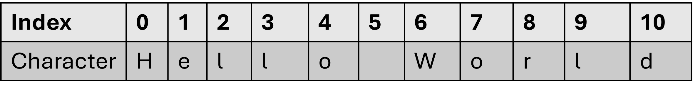

greeting = "Hello"
name = "John"
message = greeting + ', ' + name
print(message)Hello, John+*While the material in this section is optional and will not be assessed on the final exam, it might come in handy for future assignments. Especially when dealing with real world which can be messy and requires cleaning. In this section we will dive deeper into string operations such as concatenation, character replacement, spliting and slicing.
Concatenating (or combining) is the operation of joining multiple strings end-to-end, creating a longer sting. Think of it as putting multiple lego pieces together to form a larger piece. This is done with the + operator or with the * operator as shown here:
🎯 Test Myself:Create the string variable full_name combining the first and last name. Then, print the following message: My name is Jose Carlos. I am 19 (using the variable defined earlier)
The * operator can be used to multiply a string with a intger in order to repeat the sting multiple times. For example:
Processing textual data often required “cleaning” formatted numbers that aren’t recognized by python. Consider the number 23,5 which uses a comma as a decimal seperator instead of .. This is common in the French system as well as in Europe and South America.
We must relace the formatting commas: , with . before performing a conversion. Python has a “function” called replace() which replaced an old character with a new as such:
To remove a character completely, the same function can be used to replace that character can with nothing (""):
For example: Consider textual data stored as "1,000,000,000" and we must convert this into a number. If we tried to convert it into an int directly, this would cause an error:
Let’s remove the , with replace():
🎯 Test Myself: Upon reading a corrupted text file, Bruce got the following string to clean-up, help him find all % and change them into spaces and find all 0 and replace them into o:
The ancient oak tree whispered secrets to the wind as the first stars began to twinkle in the dusk..replace().replace() as much as needed without having to create new variables each time.When working with structured data, the information we need might be stored in a large string with a repeated character seperating the imporatant pieces of information.
Let’s use the following string as an example:
How can we access the individual names “Alex”, “Jennifer”, “Carlos”, etc without the #?
There is a python “function” called split()which breaks a given string into a list of substrings using a specific separator character. In this case, we would need to divide up the string into 4 new substrings and using the # as the seperator.
['Alex', 'Jennifer', 'Carlos', 'Francine']replace() and split() are actually a methods not functions because they are always associated with a string unlike a function which can be called on its own, just like print(). That’s why it’s always a_string.replace() or a_string.split(). You must use the . following the name the string variable.
🎯 Test Myself: The following script contains important values that should be seperated. Use the split() method to output the following values: ['15', '49', '56.2', '78.0', '89.2', '456']
split() method without specifying any input argument. By default, this method seperates a string using the Observe the following raw string data “Student number: 123456”. What if we are interested only in this part “123456”. There is no seperator character that allows us to split this string into ‘Student number:’ and ‘123456’. Therefore we must find a way to get parts of a string in a more precise way. To solve this problem, we must understand more deeply what strings are made up of.
Strings are nothing more than sequences of unicode character (‘a’,‘b’,‘c’,….’%‘,’#‘,….). Each character in a string occupies a specific position or index. For example in “Hello World”, the ’H’ character is at index 0, the ‘e’ is at index 1, the ‘l’ is at index 2, etc.

To access a specific character within the string, use square brackets [] and the index of the character to select:
Referring back to our example “Student number: 123456”, the information we want to extract is located between index 16 and 21 inclusive. To retrieve a specific portion of a string, use slicing with the format <start_index>:<end_index>. Note that the end_index is not included in the slice, there for we must specify [16:22] :
Notice that the end_index is one more than 21. That is because the range 16:22 will count 16, 17, 18, 19, 20, 21 and stop when the index reaches end_index (in this case: 22). We will learn more about ranges with for loops.